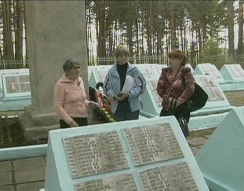
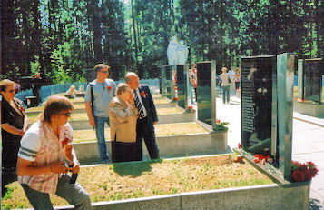
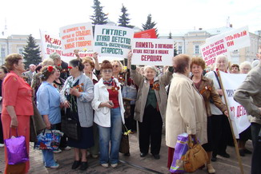

июнь 2009 года
ПО ЗОВУ СЕРДЦА И ДОЛГУ ПАМЯТИ
(Окончание. Начало на стр. 1)
О поездке в Беларусь рассказывает племянник Ивана Андреевича Елизаров Юрий Владимирович: «Приехав в Чаусы, мы убедились, что нас здесь уже ждут. Сразу же разместили в гостинице, предложили программу нашего участия в праздничных мероприятиях в Чаусах и Быново. 9 мая наша семья стала участником шествий и митингов в Чаусах и Быново. Много слышал о радушии и гостеприимстве наших братьев - белорусов, но не могу передать словами, как тепло и заботливо относились к нам в любом месте, где мы появлялись. В канун праздника, специально для гостей из Твери был открыт местный музей и проведена экскурсия по его экспозициям. Из наших встреч, общения с местными жителями мы поняли, что в Беларуси память о каждом четвертом жителе республики, погибшем в годы войны - это святое для каждого от мала до велика.
Воинское захоронение в Быново находится на значительном удалении от населенного пункта, в глухом лесу, но содержится в идеальном состоянии. Совсем недавно проведена его капитальная реконструкция. На мраморных мемориальных плитах имена более двух тысяч советских солдат и офицеров. Имя дяди было выбито на одной из плит буквально через несколько дней после моего звонка в Чаусский райисполком.
От всех наших семей низкий поклон всем, кто помогал установить судьбу и место захоронения Ивана Андреевича, кто увековечил Память о нем на его Родине и белорусской земле».
* * *
В эти же праздничные дни, 8 - 9 мая, в Твери побывала семья Ларисы Ищенко из г. Молодечно Минской области. Лариса Александровна впервые побывала на могиле своего отца лейтенанта Лабзо Александра Юльяновича, защищавшего Тверскую землю и умершего от ран в одном из госпиталей г. Калинина 28 декабря 1942 г. Похоронен на воинском мемориале, что на восточной окраине кладбища «Большие Перемерки»
Всем нам нередко приходится быть свидетелями жарких дискуссий о российской национальной идее. У нас тоже нет полного ответа на этот вопрос, но есть глубокое убеждение, что память о павших защитниках Отечества – одна из главных ее составляющих, стержень высокой духовности и национального самосознания народа.

Мы не участники войны, мы павших воинов сыны!
Солдаты гибли, умирая,
Они просили за своих детей
В сиротстве оставляя,
Чтоб позаботились о них.
Страна погибшего забыла,
А за нее он жизнь отдал.
Наши отцы свято верили, идя на смерть, что после войны их дети будут жить счастливо. Писал солдат письмо домой «Иду в бой защищать Родину, она вас тоже не забудет». А обернулось оно босым, голодным детством, слезами матерей, тяжелым непосильным трудом, болезнями, полуголодной старостью и непониманием со стороны государства и его чиновников.
Отцы погибшие молчат и некому за нас заступиться. О сиротах войны просто-напросто забыли, сначала прикрываясь послевоенной разрухой, а потом отмахивались как от назойливых мух.
Неужели наши отцы, погибшие за Родину, за жизнь живущих и последующих поколений не заслужили о себе никакой памяти, чтоб их детям, оставшимся в несовершеннолетнем возрасте в военные годы, была обеспечена достойная старость.
Нам льготы по закону не положены
Да и властям мы стали не нужны.
Хотя войной мы не уничтожены,
Но сильно пострадали от войны.
Могила скоро станет местом жительства
Среди печальной вечной тишины.
Мы не нужны ни Думе,
Ни правительству и президенту тоже не нужны.
Нам режет слух их жуткое молчанье
Для них нас будто не было и нет,
Звучит для нас мелодия печальная
На протяжении долгих грустных лет.
За смерть отцов нам многое положено.
Ю. Трубчанинов, Челябинск
Видя полное безразличие к своей судьбе, дети погибших защитников Родины сплотились в общественные организации во многих регионах. А в данный момент объединились регионы, создав межрегиональный Союз общественных объединений «Дети погибших защитников Отечества» Председателем этого Союза избрана на конференции 2-3 февраля 2008 года в г. Челябинске Богатырева Раиса Алексеевна, которая вот уже 5 лет возглавляет Тверскую городскую общественную организацию «Союз детей-сирот войны». Сегодня наш Союз проделывает огромную работу по защите социально-экономических прав и интересов детей-сирот войны, ведет деятельность, направленную на утверждение статуса «детей погибших защитников Отечества», признания нас жертвами фашизма с моральной и материальной компенсацией за погибших отцов.
В нашем движении детей погибших защитников Отечества в ВОВ у каждого второго отец пропал без вести.
Анатолий Папанов – народный артист, участник войны сказал: «Погибнуть в бою за Родину – это честь для солдата, а пропасть без вести – это трагедия, как для солдата, так и для его семьи». Вот почему мы тесно сотрудничаем с фондом «Жить и Помнить» по поиску пропавших без вести и увековечиванию их памяти. Члены нашей организации узнают через Фонд «Жить и Помнить» адреса захоронений (перезахоронений) своих погибших отцов. По возможности посещают эти могилы, но зачастую этому предшествует большая подготовительная работа даже в том случае, если есть документы, точно указывающие, где и при каких обстоятельствах человек погиб.
Мы глубоко признательны президенту Фонда Мусину Леониду Михайловичу за создание этого Фонда, это так значимо для каждого члена нашей организации. Только человек с богатой душой может пойти на создание такого благородного дела. Доброта - это когда можно поделиться тем, что ты имеешь. Нам очень повезло, что на пути нашей деятельности встретился человек, такой как Мусин Леонид Михайлович. Особая благодарность Терентьеву Александр Михайлович за его кропотливый и самоотверженный труд.
Есть у меня заветная мечта
Найти могилу своего отца
Узнать, где принял он последний бой
Тогда, быть может, обрету покой
Придти к могиле, поклониться
И положить на холмик алые цветы
Да горсточку родной Тверской земли.
Р. Медюк
26 февраля в гарнизонном доме офицеров наша организация отметила пятилетний юбилей и годовщину создания Межрегионального Союза общественных объединений «Дети погибших защитников Отечества». Очень важно, что на нашем торжественном мероприятии руководитель поисковых отрядов Тверской области Титков Сергей Владимирович впервые показал свой фильм о поисках останков не захороненных и без вести пропавших солдат. За период с 90-х годов до 2009 г. было перезахоронено свыше 30 000 солдат. Поисковики говорят так: «Пока не будет захоронен последний солдат, война не окончена». Фонд «Жить и Помнить» стал центром поисковых работ. Низкий поклон Вам дорогие от всех сирот погибших защитников Родины.
«Никто не забыт, ничто не забыто»,
Но где же тогда ты, отец мой убитый?
Без вести пропавший на этой войне,
Под пулей упавший, сгоревший в огне?
Им нет обелиска и нет им могилы,
Лишь топи болотные их схоронили.
Никто не забыт? Ничто не забыто?
Но где же тогда ты, отец мой убитый?
Н. Коблова, Москва
9 мая – день великой Победы над фашизмом, а дети погибших солдат вот уже 64 года несут в своей душе и боль и обиду на ту проклятую войну, что оставила их сиротами, обделила отцовской заботой и лаской.
Для нас очень дорого видеть понимание наших проблем участникам Великой Отечественной войны. А именно:
Украинцев Иван Васильевич считая своим долгом выполнить обещания, данные погибшим своим товарищам, в своих выступлениях, статьях обратился ко всем участникам войны поддержать Межрегиональный Союз детей – сирот в борьбе за признание их жертвами фашизма, а погибших отцов наградить посмертно Орденом Отечественной войны и вручить ордена семьям на вечное хранение.
Приближается 22 июня – день Памяти всем погибшим воинам, день Скорби и горьких воспоминаний для тех, кто не дождался своих отцов.
Именно в этот день, чтобы не случилось, в любую погоду с партнерами своих отцов дети погибших солдат выходят на свою вахту памяти.
Члены правления ТГОО «Союз детей-сирот войны»